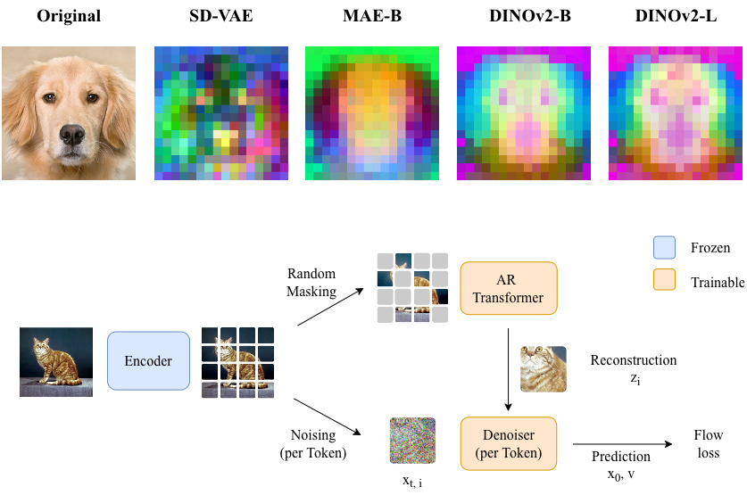

I am a research assistant at the Autonomous Vision Group in Tübingen, where I work on generative modelling together with Gege Gao.
In parallel, I work part-time as a software engineer at Maschinenfabrik Lauffer.
I received my M.Sc. in Computer Science from the University of Tübingen, where I completed my master's thesis on generative modelling and representation learning supervised by Andreas Geiger. Prior to that, I received my B.Eng. in Electrical Engineering from the Duale Hochschule Baden-Württemberg in cooperation with Maschinenfabrik Lauffer in 2022.
For any inquiries, feel free to reach out to me via mail!

@InProceedings{Plocher2026Master,
author = {Marcel Plocher},
title = {Exploring Efficient Autoregressive Diffusion in Different Representation Spaces},
booktitle = {Master's Thesis, University of Tübingen},
year = {2026},
}This page is based on the template of Michael Niemeyer. Checkout his GitHub repository for instructions on how to use it